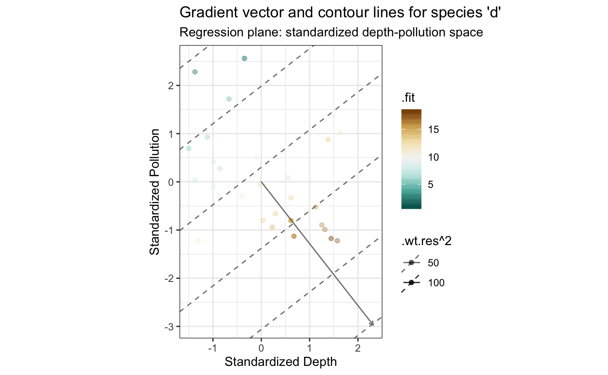
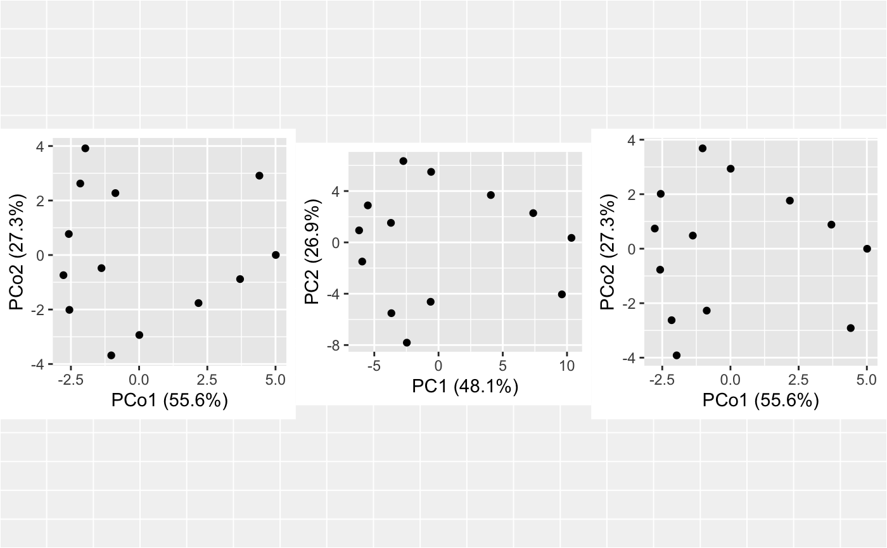
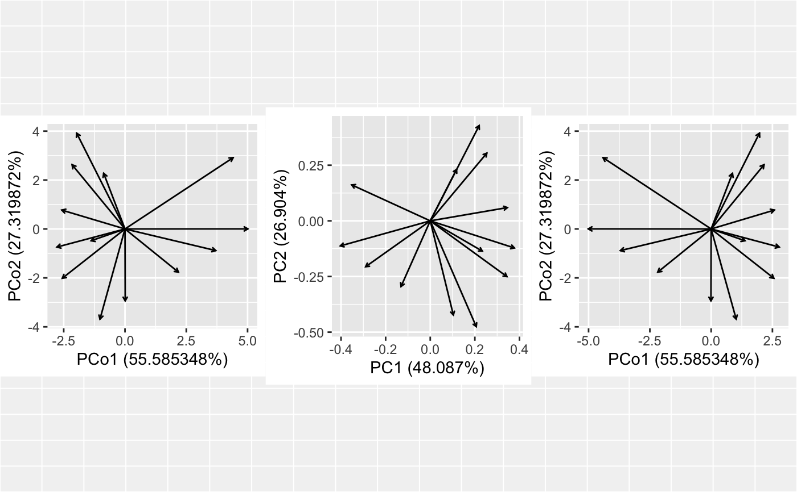
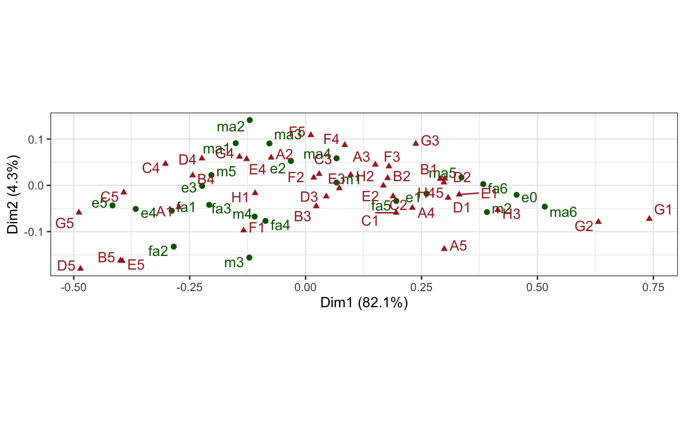
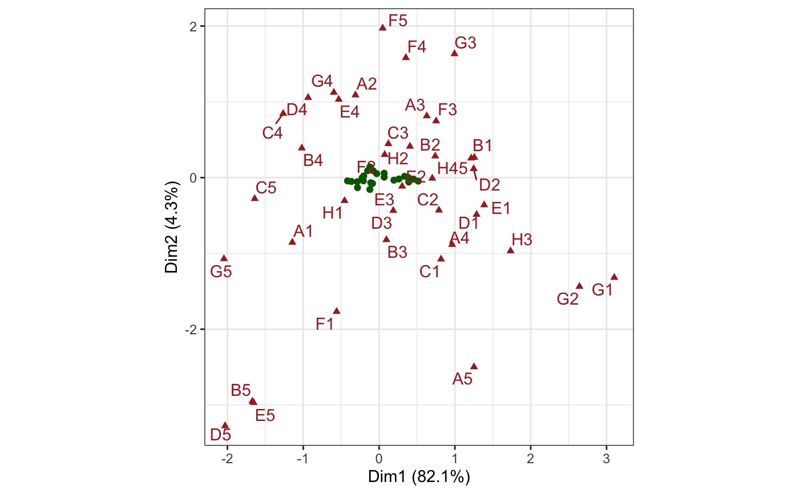

geom-biplot-point.Rdgeom_*_point() renders symbols at the positions of the
subjects or vectors.
geom_u_point( mapping = NULL, data = NULL, stat = "identity", position = "identity", ..., na.rm = FALSE, show.legend = NA, inherit.aes = TRUE ) geom_v_point( mapping = NULL, data = NULL, stat = "identity", position = "identity", ..., na.rm = FALSE, show.legend = NA, inherit.aes = TRUE ) geom_biplot_point( mapping = NULL, data = NULL, stat = "identity", position = "identity", .matrix = "u", ..., na.rm = FALSE, show.legend = NA, inherit.aes = TRUE )
| mapping | Set of aesthetic mappings created by |
|---|---|
| data | The data to be displayed in this layer. There are three options: If A A |
| stat | The statistical transformation to use on the data for this layer, as a string. |
| position | Position adjustment, either as a string, or the result of a call to a position adjustment function. |
| ... | Additional arguments passed to |
| na.rm | Passed to |
| show.legend | logical. Should this layer be included in the legends?
|
| inherit.aes | If |
| .matrix | A character string matching one of several indicators for one
or both matrices in a matrix decomposition used for ordination. The
standard values are |
ggbiplot() uses ggplot2::fortify() internally to produce a single data
frame with a .matrix column distinguishing the subjects ("u") and
variables ("v"). The stat layers stat_u() and stat_v() simply filter
the data frame to one of these two.
The geom layers geom_u_*() and geom_v_*() call the corresponding stat in
order to render plot elements for the corresponding matrix \(U\) or
\(V\). geom_biplot_*() selects a default matrix based on common practice,
e.g. \(U\) for points and \(V\) for arrows.
geom_*_point() understands the following aesthetics (required aesthetics
are in bold):
x
y
alpha
colour
fill
linetype
shape
size
stroke
group
# Linear regression on marine ecosystem data # Adapt Exhibit 2.3 in Greenacre (2010) data(bioenv) bioenv %>% transform( x = as.vector(scale(Depth)), y = as.vector(scale(Pollution)) ) %>% lm(formula = d ~ x + y) %>% as_tbl_ord() %>% augment() %>% print() -> bioenv_lm#> # A tbl_ord of class 'lm': (30 x 3) x (1 x 3)' #> # 3 coordinates: (Intercept), x, y #> # #> # U: [ 30 x 3 | 7 ] #> `(Intercept)` x y | .name .hat .sigma .cooksd #> | <chr> <dbl> <dbl> <dbl> #> 1 1 -0.156 0.132 | 1 1 0.0344 5.20 6.85e-3 #> 2 1 0.0363 -0.802 | 2 2 0.0587 5.24 4.64e-3 #> 3 1 -0.988 0.413 | 3 3 0.0670 5.26 3.62e-4 #> 4 1 -0.668 1.72 | 4 4 0.135 5.25 3.50e-3 #> 5 1 -0.860 -0.288 | 5 5 0.0750 5.26 6.07e-5 #> # … with 25 more rows, and 3 more #> # U: [ 30 x 3 | 7 ]# variables: .wt.res <dbl>, #> `(Intercept)` x y | # .fit <dbl>, .se.fit <dbl> #> # #> # V: [ 1 x 3 | 1 ] #> `(Intercept)` x y | .name #> | <chr> #> 1 10.9 2.31 -2.97 | 1 dbioenv_lm %>% ggbiplot(aes(x = x, y = y, color = .fit, alpha = .wt.res ^ 2)) + theme_bw() + scale_color_distiller(type = "div", palette = 1) + scale_alpha_continuous(range = c(1/3, 1)) + geom_u_point() + geom_v_vector() + geom_v_isolines(aes(intercept = `(Intercept)`), axes = 1, by = 5) + labs(x = "Standardized Depth", y = "Standardized Pollution") + ggtitle( "Gradient vector and contour lines for species 'd'", "Regression plane: standardized depth-pollution space" )#> Warning: Ignoring unknown aesthetics: intercept# Align an MDS ordination to a PCA ordination data(country_differences) country_differences %>% cmdscale(k = 2) %>% as_tbl_ord() %>% print() -> differences_cmds#> # A tbl_ord of class 'cmds': (13 x 2) x (13 x 2)' #> # 2 coordinates: PCo1 and PCo2 #> # #> # U: [ 13 x 2 | 0 ] #> PCo1 PCo2 | #> | #> 1 0.00781 -2.94 | #> 2 -1.02 -3.68 | #> 3 3.70 -0.883 | #> 4 -2.56 -2.01 | #> 5 4.41 2.91 | #> #> # #> # V: [ 13 x 2 | 0 ] #> PCo1 PCo2 | #> | #> 1 0.00781 -2.94 | #> 2 -1.02 -3.68 | #> 3 3.70 -0.883 | #> 4 -2.56 -2.01 | #> 5 4.41 2.91 | #>#> # A tbl_ord of class 'prcomp': (13 x 13) x (13 x 13)' #> # 13 coordinates: PC1, PC2, ..., PC13 #> # #> # U: [ 13 x 13 | 0 ] #> PC1 PC2 PC3 ... | #> | #> 1 -0.576 5.50 3.17 | #> 2 -2.74 6.34 -0.0599 ... | #> 3 7.37 2.28 -1.22 | #> 4 -5.50 2.88 -1.06 | #> 5 9.60 -4.05 -3.03 | #> #> # #> # V: [ 13 x 13 | 0 ] #> PC1 PC2 PC3 ... | #> | #> 1 0.104 -0.423 -0.340 | #> 2 0.206 -0.475 -0.00197 ... | #> 3 -0.289 -0.206 0.121 | #> 4 0.343 -0.250 0.102 | #> 5 -0.352 0.161 0.302 | #># negate PCA cases to MDS coordinates differences_cmds %>% negate_to(differences_pca, "u") %>% print() -> differences_align_u#> # A tbl_ord of class 'cmds': (13 x 2) x (13 x 2)' #> # 2 coordinates, transformed: PCo1 and PCo2 #> # #> # U: [ 13 x 2 | 0 ] #> PCo1 PCo2 | #> | #> 1 0.00781 2.94 | #> 2 -1.02 3.68 | #> 3 3.70 0.883 | #> 4 -2.56 2.01 | #> 5 4.41 -2.91 | #> #> # #> # V: [ 13 x 2 | 0 ] #> PCo1 PCo2 | #> | #> 1 0.00781 2.94 | #> 2 -1.02 3.68 | #> 3 3.70 0.883 | #> 4 -2.56 2.01 | #> 5 4.41 -2.91 | #>plot(gridExtra::arrangeGrob(grobs = list( ggbiplot(differences_cmds) + geom_u_point(), ggbiplot(differences_pca) + geom_u_point(), ggbiplot(differences_align_u) + geom_u_point() ), ncol = 3))# negate PCA variables to MDS coordinates differences_cmds %>% negate_to(differences_pca, "v") %>% print() -> differences_align_v#> # A tbl_ord of class 'cmds': (13 x 2) x (13 x 2)' #> # 2 coordinates, transformed: PCo1 and PCo2 #> # #> # U: [ 13 x 2 | 0 ] #> PCo1 PCo2 | #> | #> 1 -0.00781 -2.94 | #> 2 1.02 -3.68 | #> 3 -3.70 -0.883 | #> 4 2.56 -2.01 | #> 5 -4.41 2.91 | #> #> # #> # V: [ 13 x 2 | 0 ] #> PCo1 PCo2 | #> | #> 1 -0.00781 -2.94 | #> 2 1.02 -3.68 | #> 3 -3.70 -0.883 | #> 4 2.56 -2.01 | #> 5 -4.41 2.91 | #>plot(gridExtra::arrangeGrob(grobs = list( ggbiplot(differences_cmds) + geom_v_vector(), ggbiplot(differences_pca) + geom_v_vector(), ggbiplot(differences_align_v) + geom_v_vector() ), ncol = 3))# Confer inertia between rows and columns of CA on Spanish ISSP sample data(issp_women) issp_women %>% ca::ca() %>% as_tbl_ord() %>% augment() %>% print() -> issp_ca#> # A tbl_ord of class 'ca': (23 x 22) x (39 x 22)' #> # 22 coordinates: Dim1, Dim2, ..., Dim22 #> # #> # U: [ 23 x 22 | 4 ] #> Dim1 Dim2 Dim3 ... | .name .mass .dist .inertia #> | <chr> <dbl> <dbl> <dbl> #> 1 0.280 0.111 0.830 | 1 m1 0.185 0.0807 0.00120 #> 2 1.64 -1.05 -1.86 ... | 2 m2 0.0272 0.413 0.00464 #> 3 -0.508 -2.84 1.14 | 3 m3 0.00712 0.321 0.000733 #> 4 -0.459 -1.23 0.0111 | 4 m4 0.0109 0.226 0.000558 #> 5 -0.850 0.403 -1.08 | 5 m5 0.103 0.214 0.00471 #> # … with 18 more rows #> # #> # V: [ 39 x 22 | 4 ] #> Dim1 Dim2 Dim3 ... | .name .mass .dist .inertia #> | <chr> <dbl> <dbl> <dbl> #> 1 -1.14 -0.854 -0.892 | 1 A1 0.0236 0.289 0.00197 #> 2 -0.311 1.09 -0.817 ... | 2 A2 0.0553 0.109 0.000651 #> 3 0.629 0.814 0.283 | 3 A3 0.00540 0.333 0.000598 #> 4 0.963 -0.883 1.79 | 4 A4 0.0355 0.255 0.00230 #> 5 1.25 -2.50 0.188 | 5 A5 0.00528 0.409 0.000884 #> # … with 34 more rows# Reproduce Exhibit 9.2 in Greenacre (2010)... issp_ca %>% confer_inertia(c(1, 1)) %>% ggbiplot(aes(label = .name)) + theme_bw() + geom_u_point(color = "darkgreen") + geom_u_text_repel(color = "darkgreen") + geom_v_point(color = "brown", shape = 17) + geom_v_text_repel(color = "brown")#> Warning: Inertias are not balanced.# Reproduce Exhibit 9.3 in Greenacre (2010)... issp_ca %>% confer_inertia("rowprincipal") %>% ggbiplot(aes(label = .name)) + theme_bw() + geom_u_point(color = "darkgreen") + geom_v_point(color = "brown", shape = 17) + geom_v_text_repel(color = "brown")# Reproduce Exhibits 9.4 and 9.6 in Greenacre (2010)...